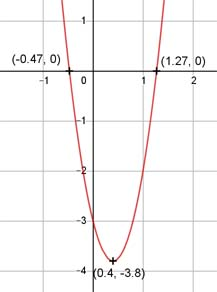

Aufgabe 7 f(x) = 5x2 - 4x - 3 f'(x) = 10x -4, f''(x) = 10, f'''(x) = 0 Definitionsbereich: -∞ < x < ∞ Wertebereich: -3,8 ≤ f(x) < ∞ (siehe Extrempunkte) Asymptoten: - Symmetrie: - Nullstellen: 5x2 - 4x - 3 = 0 A, B, C - Formel: A = 5, B = -4, C = -3 x1,2 = x1,2 = x1,2 = 4 ± 8,7 x1,2 = ----------- 10 x1 = 1,27 x2 = -0,47 N1(1,27|0), N2(-0,47|0) Schnittpunkt mit der y-Achse: f(0) = 5 * 02 - 4 * 0 - 3 = -3 Sy(0|-3) Extrempunkte: 10x - 4 = 0 |+4 10x = 4 |:10 x = 0,4, f(0,4) = 5 * 0,42 - 4 * 0,4 - 3 = -3,8 f''(0,4) = 10 > 0 --> Tiefpunkt (0,4|-3,8) Alternativ: Scheitelpunktberechnung f(x) = 5x2 - 4x - 3 |:5 f(x) ---- = x2 - 0,8x - 0,6 5 f(x) ---- = (x - 0,4)2 - 0,16 - 0,6 |*5 5 f(x) = 5 * (x - 0,4)2 - 3,5 Wendepunkte: 10 = 0 --> Widerspruch, keine Wendepunkte Graph:
